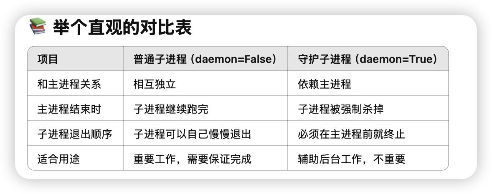
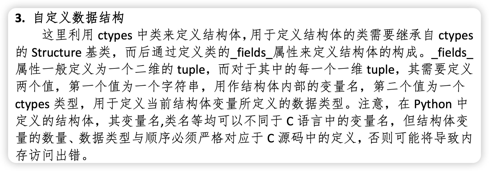
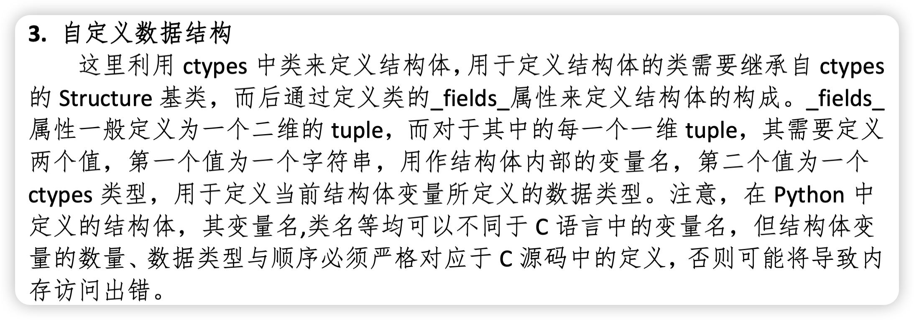

Pyhton Multiprocess
众所周知，py因为有GIL的存在，导致python的多线程并不能真正实现多线程的效果。python的多进程可以有效的解决这个问题。python的多进程是通过multiprocessing模块来实现的。



一个用cond条件变量实现生产者消费者的例子
producer consumer
下面是完全用 Process 子类，并结合双 Condition 的“满/空”优化，同时保留了：
- with cond: 自动加锁/解锁
- while 循环防虚假唤醒
- notify_all() 精准唤醒
- 子类化封装，可复用、清晰
1
2
3
4
5
6
7
8
9
10
11
12
13
14
15
16
17
18
19
20
21
22
23
24
25
26
27
28
29
30
31
32
33
34
35
36
37
38
39
40
41
42
43
44
45
46
47
48
49
50
51
52
53
54
55
56
57
58
59
60
61
62
63
64
65
66
67
68
69
70
71
72
73
74
75
76
77
78
79
80
81
82
83
84
85
86
87
88
89
| from multiprocessing import Process, Condition, Value
import time, random
MAXSIZE = 10
class Producer(Process):
def __init__(self, not_full: Condition, not_empty: Condition,
counter: Value, sleep: float = 1.0):
super().__init__()
self.not_full = not_full
self.not_empty = not_empty
self.counter = counter
self.sleep = sleep
def run(self):
while True:
with self.not_full:
while self.counter.value >= MAXSIZE:
print(f"{self.name}: buffer full ({self.counter.value}), waiting")
self.not_full.wait()
self.counter.value += 1
print(f"{self.name}: produced → buffer size = {self.counter.value}")
with self.not_empty:
self.not_empty.notify_all()
time.sleep(self.sleep * random.random())
class Consumer(Process):
def __init__(self, not_full: Condition, not_empty: Condition,
counter: Value, sleep: float = 1.5):
super().__init__()
self.not_full = not_full
self.not_empty = not_empty
self.counter = counter
self.sleep = sleep
def run(self):
while True:
with self.not_empty:
while self.counter.value <= 0:
print(f"{self.name}: buffer empty, waiting")
self.not_empty.wait()
self.counter.value -= 1
print(f"{self.name}: consumed ← buffer size = {self.counter.value}")
with self.not_full:
self.not_full.notify_all()
time.sleep(self.sleep * random.random())
if __name__ == '__main__':
not_full = Condition()
not_empty = Condition()
counter = Value('i', 0)
producers = [
Producer(not_full, not_empty, counter, sleep=1.0)
for _ in range(2)
]
for p in producers:
p.daemon = True
p.start()
consumers = [
Consumer(not_full, not_empty, counter, sleep=1.5)
for _ in range(3)
]
for c in consumers:
c.daemon = True
c.start()
try:
time.sleep(20)
finally:
print("Main process exiting; all daemon workers will be terminated.")
|
这段代码中：
- with self.not_full: / with self.not_empty:自动acquire() + release()，无须手动管理。
- 使用 while 进行条件检查防止“虚假唤醒”（spurious wakeup）。
- notify_all()精确唤醒对应一侧（生产者唤醒消费者、消费者唤醒生产者），避免无用广播。
- Process 子类化清晰封装，参数可调，易于复用。
- daemon=True主进程退出后，所有守护子进程会一并结束，避免“孤儿”残留。
这样，你就得到了一个既高效又规范的双 Condition 版本生产者–消费者模型。
Barrier

可以方便的指定数量到多少后同步。
多进程共享内存
 

这两个自己来管理，自定义结构体也比较麻烦。
可以使用manager来管理共享内存，manager会自动创建一个进程来管理共享内存。

JoinableQueue

不让consumer因为producer少就提前结束方法（检测到queue.empty but producer doesn’t end）
- 使用joinablequeue q.join阻塞直到所有put都被调用了takedone
这个问题解决了如何让在中途消费者不会break的问题，但何时终止consumer的while呢？

整个joinablequeue流程：

进程池 pool
example
如果只是同一组函数的的多次调用，使用进程池会很方便
1
2
3
4
5
6
7
8
9
10
11
12
13
14
15
16
17
18
19
20
21
22
23
| import os
import time
import random
from multiprocessing import Pool
def work(n):
print(f'{os.getpid()} run')
time.sleep(1)
return n ** 2
if __name__ == '__main__':
p = Pool()
res_l = []
for i in range(10):
res = p.apply_async(work, args=(i,))
res_l.append(res)
p.close()
p.join()
for res in res_l:
print(res.get())
|
添加一个进程返回后的callback
1
2
3
4
5
6
7
8
9
10
11
12
13
14
15
16
17
18
19
20
21
22
23
24
25
26
27
28
29
30
31
32
33
34
35
36
| from tqdm import tqdm
from multiprocessing import Pool
import time
import os
pbar = tqdm(total=10)
pbar.set_description("Sleep")
update = lambda *args: pbar.update()
def work(n):
print(f"{os.getpid()} run")
time.sleep(1)
return n**2
if __name__ == "__main__":
p = Pool(3)
res_l = []
for i in range(10):
res = p.apply_async(work, args=(i,), callback=update)
res_l.append(res)
p.close()
p.join()
for res in res_l:
print(res.get())
|